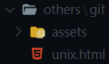
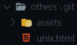
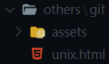
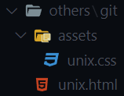
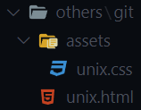

mkdir directory
../coding-lab/others/git
$ mkdir assets
 
(p) make as needed without errors
$ mkdir -p assets/unix

(p) make as needed without errors
$ mkdir -p assets/unix

man command
command --help
pwd
ls
cd pathname
mkdir directory
touch filename
 

rm entry
(Linux) xdg-open entry
(Mac) open entry
(Windows) start entry